CH02-071 — images
【過積載の頭】やることが多すぎると止まる脳
ep
CH02
Script Viewer
snapshot
guide
台本
音声
サムネ
画像
CH02-071
画像
updated_at: 2026-01-13T11:01:50.708525Z
run_id:
CH02-071_mix433_20260106
CH02-071
タスク・雪崩
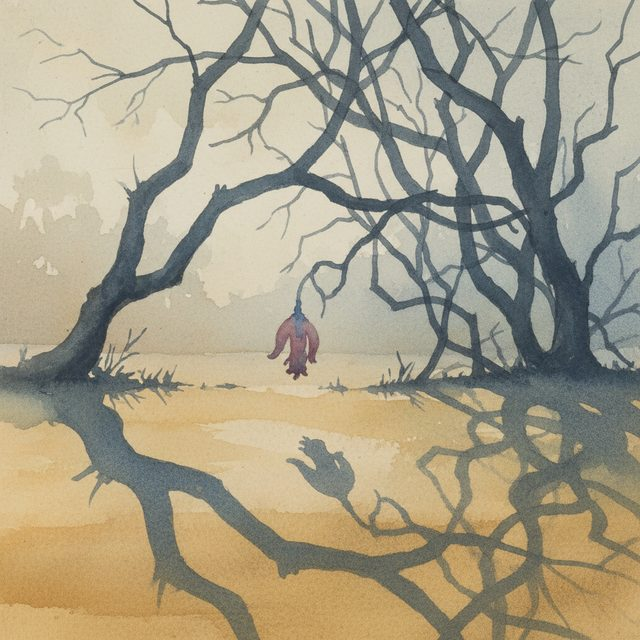
CH02-071
タスク・フリーズ
CH02-071
今週・容量
CH02-071
焦点・待機
CH02-071
一手・摩擦
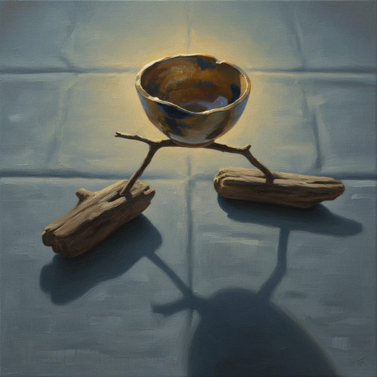
CH02-071
タスク・ブロック
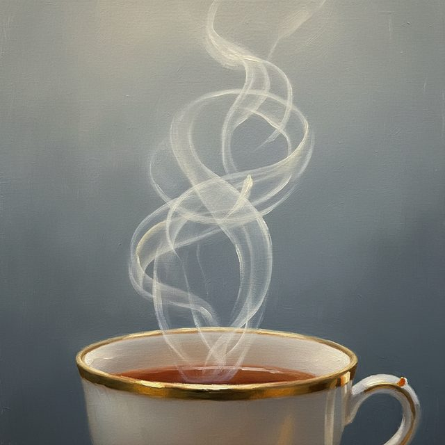
CH02-071
緊急・重要
CH02-071
タスク・完璧
CH02-071
確認・必要
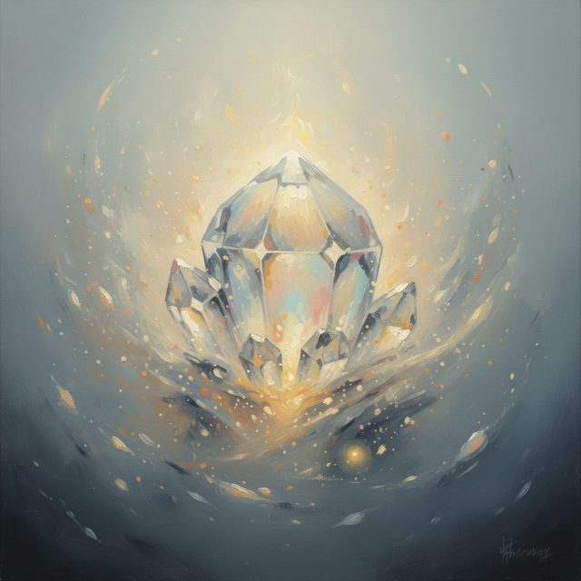
CH02-071
タスク・ツール
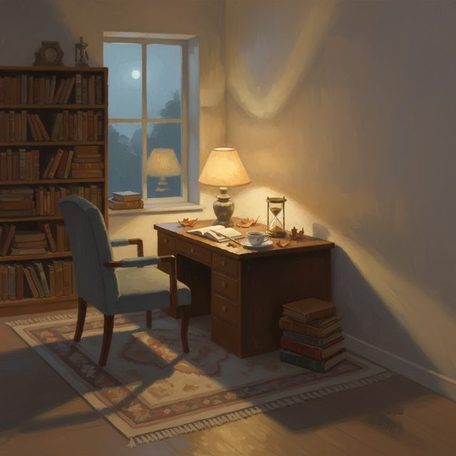
CH02-071
状態・優先順位
CH02-071
タスク・リセット
CH02-071
タスク・感覚
CH02-071
主体・直列
CH02-071
タスク・自己嫌悪
CH02-071
タスク・回復
CH02-071
タスク・調整
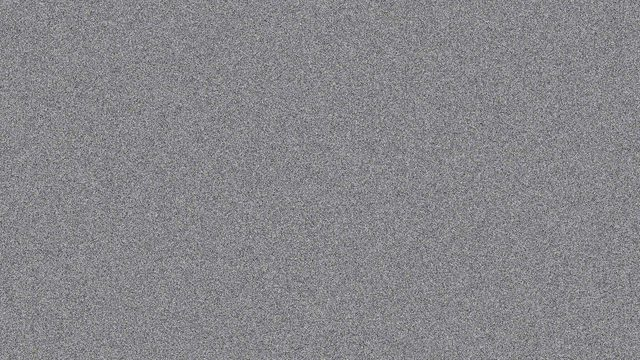
CH02-071
タスク・出口
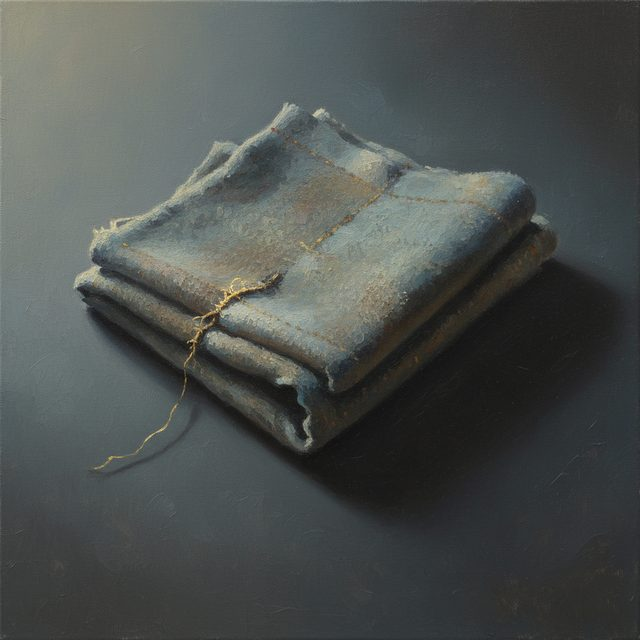
CH02-071
タスク・場所
CH02-071
配分・報酬
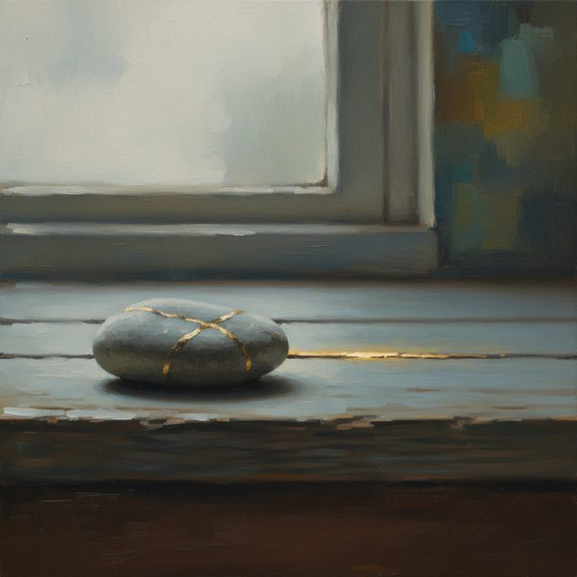
CH02-071
感覚・不可避
CH02-071
道・感覚
CH02-071
通知・作業
CH02-071
タスク・感情
CH02-071
タスク・ノイズ
CH02-071
タスク・時間
CH02-071
手放・時間
CH02-071
三分・予定
CH02-071
タスク・階段
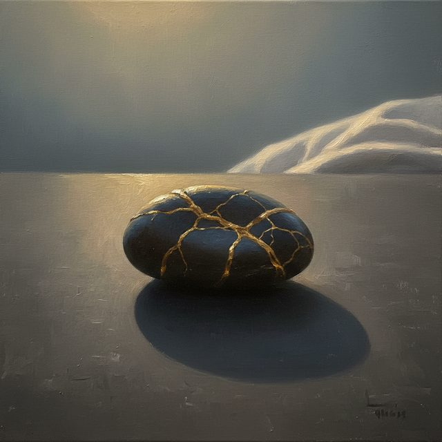
CH02-071
翌朝・処理速度
CH02-071
主体・混乱
CH02-071
未来・前倒
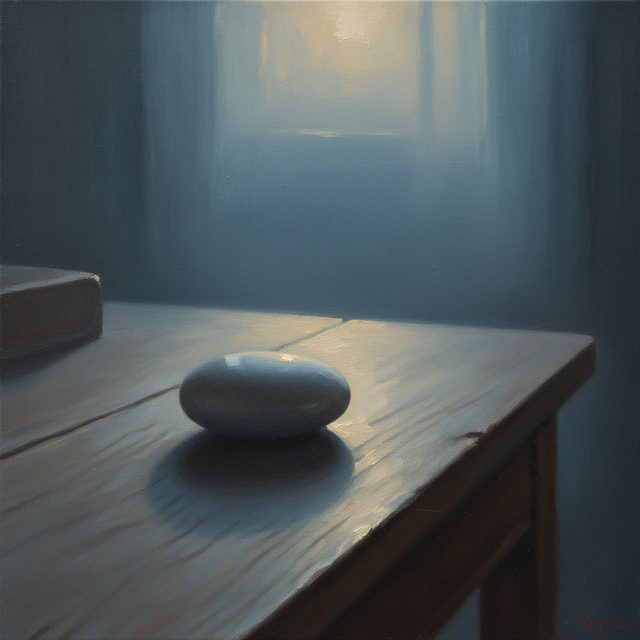
CH02-071
タスク・時間
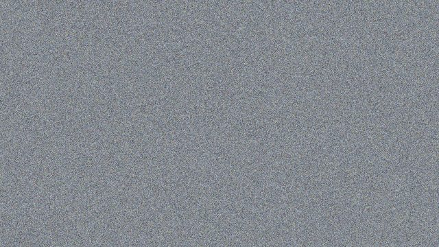
CH02-071
堤防・洪水
CH02-071
手放・余白
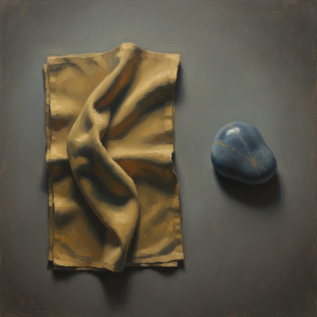
CH02-071
呼吸・場所
CH02-071
ゴール・タスク
CH02-071
時間・処理
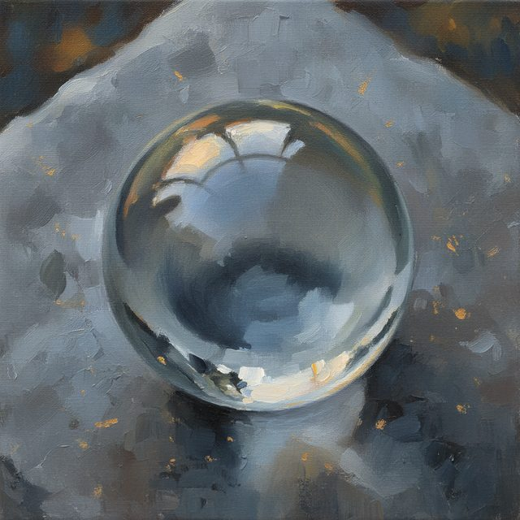
CH02-071
達成感・行動
CH02-071
余白・予定
CH02-071
道・主導権
CH02-071
最小限・現在
CH02-071
制御・配分
CH02-071
余白・最後